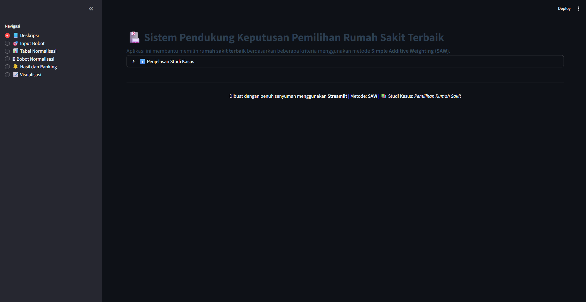

Projek Akhir SCPK
Aplikasi ini merupakan proyek akhir mata kuliah SCPK yang dirancang untuk membantu [tujuan proyek kamu — misalnya: manajemen data, interaksi user, laporan, atau fitur khusus yang kamu buat]. Sistem ini dibangun dengan menggunakan [teknologi utama yang dipakai — misal: PHP, MySQL, JavaScript] sehingga dapat bekerja secara efisien dan mudah digunakan oleh pengguna.
3
Total Teknologi5
Fitur UtamaTechnologies Used
PHP MySQL Bootstrap

⭐ Key Features
- Fitur utama pertama dari proyek.
- Fitur kedua yang penting dijelaskan.
- Fitur ketiga yang mempermudah pengguna.
- Fitur lainnya sesuai yang ada di repo.
- Tambahkan jika masih ada fitur lain.